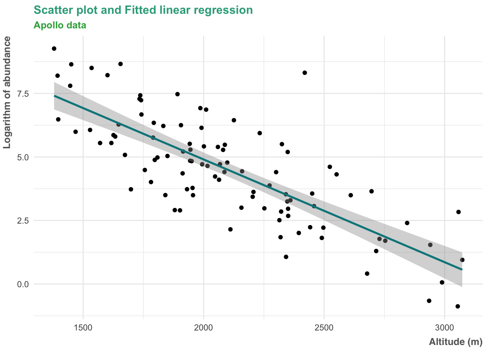
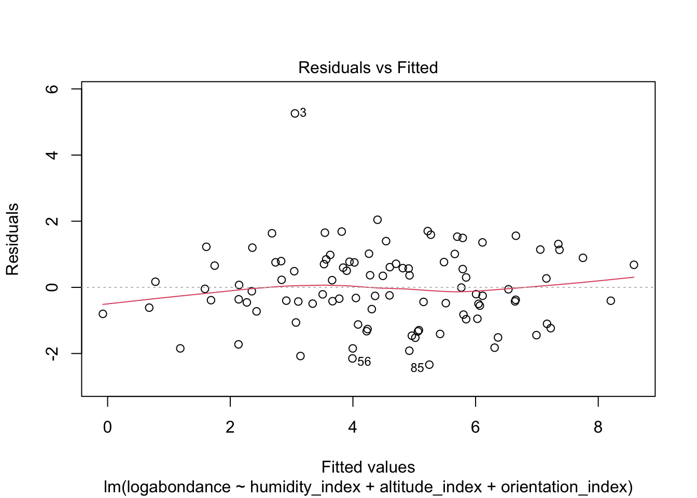
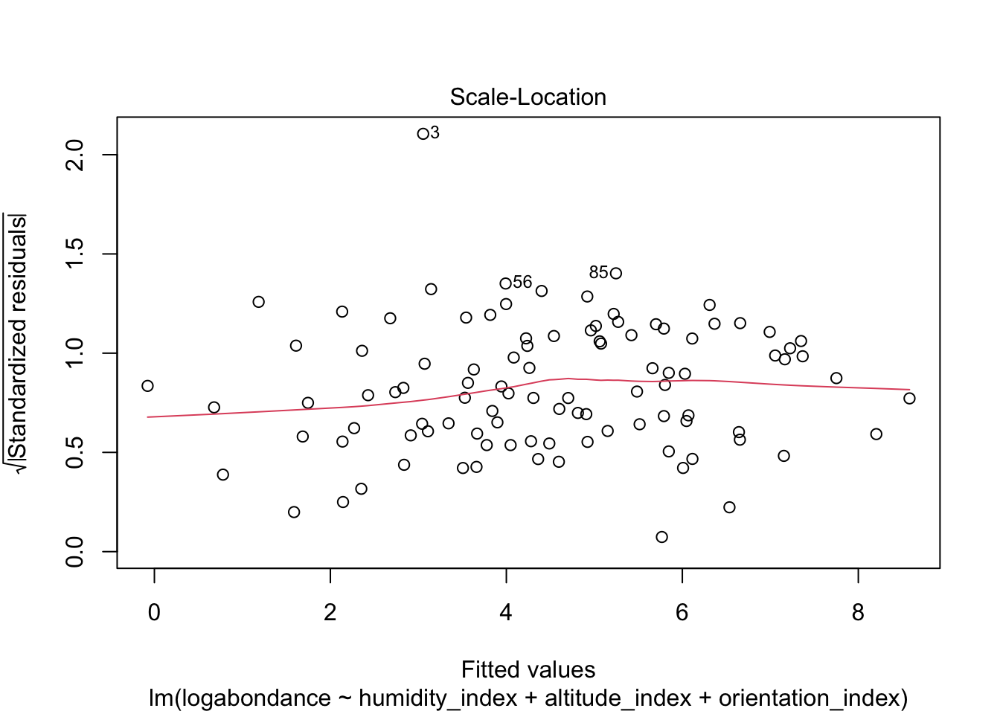
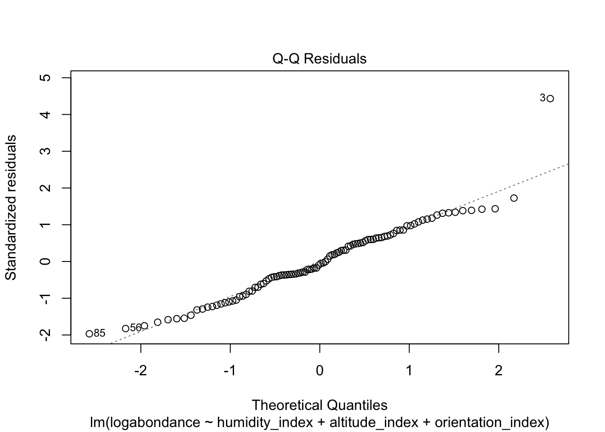

Ce chapitre résumé est très largement inspiré, et pour tout une partie reprise du cours Modèle linéaire gaussien de Sophie Donnet. Il peut être retrouvé sur son site internet : https://sophiedonnet.github.io/linearmodel.html.
Nous débutons en chargeant un ensemble de paquets pour la manipulation de données et des représentations graphiques.
Afficher le code
if (!require(tidyverse)) install.packages("tidyverse")if (!require(knitr)) install.packages("knitr")if (!require(corrplot)) install.packages("corrplot")if (!require(GGally)) install.packages("GGally")library(tidyverse) # manipulation et visualisation avancees de donneeslibrary(knitr) # Export et format de notebook R library(corrplot) # Graphiques de matriceslibrary(GGally) # Extension de ggplot2 facile d'utilisation
Le bloc de codes suivant permet de fixer certains paramètres de représentation graphique ggplot que nous réutiliserons tout au long de ce chapitre.
Afficher le code
# default ggplot themeset_theme(# black and white theme: defaut theme of ggplot2theme_minimal() +# specify my parameterstheme(# title styleplot.title =element_text(size =12, # size of titlecolour ="#3a8", # color of titleface ="bold"), # face of title# subtitle styleplot.subtitle =element_text(size =10, # size of subtitlecolour ="#3a4", # colour of subtitleface ="bold"), # face of subtitle# axis title styleaxis.title =element_text(size =10, # size of title of axisfamily ="sans", # family of title of axisface ="bold", # face of title of axiscolour ="grey40"), # colour of title of axis# axis x title styleaxis.title.x =element_text(hjust =1, # horizontal adjustment of labelsvjust =-0.5), # vertical adjustment of labels# axis y title styleaxis.title.y =element_text(hjust =1, # horizontal adjustment of labelsvjust =2, # vertical adjustment of labelsangle =90), # angle adjustment of labels# legend positionlegend.position ="none" ))
Contexte & Description des données
Le papillon Apollon de l’espèce Parnassius apollo est une espèce emblématique des milieux montagnards, inscrite sur la liste rouge des espèces menacées en France avec le statut vulnérable. Il affectionne les pelouses rocailleuses, éboulis et prairies sèches d’altitude, où pousse sa plante-hôte, l’orpin Sedum sp., dont se nourrit exclusivement sa chenille. L’Apollon est particulièrement sensible aux conditions microclimatiques locales (ensolleillement, humidité du sol, etc.) ainsi qu’aux pratiques de gestion du milieu notamment le pastoralisme, qui influence l’ouverture des pelouses et donc la disponibilité en plante-hôte.
Dans le cadre d’un suivi de population mené dans le Parc National de la Vanoise, 100 sites d’observations ont été échantillonnés le long de transects, répartis sur quatre secteurs du massif. Pour chaque site, plusieurs variables environnementales ont été mesurées, ainsi que l’abondance (logarithmique) du papillon.
Le jeu de données apollo (au format .Rdata) possède 100 lignes et 6 colonnes, dont :
humidity_index : indice d’humidité du sol local du site. Des valeurs faibles correspondent à des milieux secs, favorables à l’espèce ; des valeurs élevées à des milieux humides, généralement moins favorables ;
altitude_index : indice d’altitude du site d’observation ;
orientation_index : indice d’exposition du site. Les valeurs élevées correspondent à des versants bien exposés et ensolleilés ;
logabundance* : logarithme de l’abondance du papillon Apollon dénombrée par transect sur chaque type ;
sector : secteur géographique du site d’observation au sein du Parc National de la Vanoise ;
grazing : mode de gestion du site : grazed pour un site pâturé, alpage exploité ; ou ungrazed pour un site non-paturé, en évolution naturelle.
Ce jeu de données permet d’étudier comment les conditions environnementales et les pratiques de gestion influencent l’abondance du papillon Apollon dans le Parc national de la Vanoise, dans une perspective de conservation d’une espèce menacée.
Importation & Exploration du jeu de données
La fonction load() permet de charger un jeu de données au format .Rdata.
Afficher le code
# a modifier selon l'emplacement du repertoire de travailload('Data/apollo.Rdata')
Une première exploration des données peut s’effectuer à l’aide des fonctions : - dim() donnant la dimension du jeu de données ; - head() affichant les (par défaut 6) premières lignes du jeu de données ; et - summary() donnant un résumé descriptif du jeu de données.
humidity_index altitude_index orientation_index logabondance.V1
Min. : 7.805 Min. :1380 Min. :-2.7783 Min. :-0.878076002828
1st Qu.:10.731 1st Qu.:1796 1st Qu.: 0.3390 1st Qu.: 2.997486496010
Median :11.195 Median :2053 Median : 0.8655 Median : 4.548821705460
Mean :11.236 Mean :2102 Mean : 0.8632 Mean : 4.488913669260
3rd Qu.:11.937 3rd Qu.:2349 3rd Qu.: 1.4746 3rd Qu.: 5.879824885520
Max. :13.350 Max. :3073 Max. : 4.2412 Max. : 9.264007023730
sector grazing
HauteMaurienne :28 ungrazed:54
HauteTarentaise:24 grazed :46
Pralognan :26
Champagny :22
Afficher le code
n <-dim(apollo)[1]
1 Visualisation d’une relation linéaire
Commençons par explorer le cas d’une relation linéaire entre deux variables.
1.1 Visualisation
Avant d’ajuster un modèle statistique aux données, il est nécessaire (quand cela est possible) de visualiser les données. Ce qui peut être facilement fait dans le cas de deux variables quantitatives continues.
D’après le graphe précédent, il semblerait qu’il y ait un lien linéaire entre l’abondance du papillon et l’altitude du lieu d’échantillonnage. De plus, ce lien est “négatif” : lorsque l’altitude augmente, l’abondance du papillon diminue (sur une échelle logarithmique).
1.2 Modèle de régression linéaire simple
L’ajustement d’un modèle de régression linéaire peut se faire à l’aide de la fonction lm().
Afficher le code
apollo.slm <-lm(formula = logabondance ~ altitude_index, # description of the model to be fitted: y ~ x1 + x2 means we fit the model y = ax1 + bx2 + c data = apollo # data frame containing the variables in the model )
La fonction summary() donne un résumé de l’objet lm() précédemment créer.
Afficher le code
summary(apollo.slm)
Call:
lm(formula = logabondance ~ altitude_index, data = apollo)
Residuals:
Min 1Q Median 3Q Max
-2.4757 -0.8852 -0.1511 0.8639 5.1083
Coefficients:
Estimate Std. Error t value Pr(>|t|)
(Intercept) 12.986199 0.700314 18.54 <2e-16 ***
altitude_index -0.004043 0.000327 -12.36 <2e-16 ***
---
Signif. codes: 0 '***' 0.001 '**' 0.01 '*' 0.05 '.' 0.1 ' ' 1
Residual standard error: 1.342 on 98 degrees of freedom
Multiple R-squared: 0.6093, Adjusted R-squared: 0.6053
F-statistic: 152.8 on 1 and 98 DF, p-value: < 2.2e-16
Le modèle ajusté précédemment détermine les “meilleurs” coefficients \(a\) et \(b\) minimisant l’erreur d’ajustement donné par : \[ \sum_{i=1}^n \big( y_i \: - \: a \, x_i -b \big)^2 \:, \] où pour tout \(i = 1,\dots, n\), \(y_i\) (resp. \(x_i\)) est le logarithme de l’abondance du papillon (resp. l’altitude) du lieu d’échantillonnage \(i\).
Afficher le code
ggplot( apollo,aes(x = altitude_index, y = logabondance) ) +geom_point() +# Simple linear regression with standard errorgeom_smooth(method = lm, formula = y ~ x,se =TRUE, color ='turquoise4' ) +labs(title ="Scatter plot and Fitted linear regression",subtitle ="Apollo data",x ="Altitude (m)",y ="Logarithm of abundance" )

2 Modèle de régression linéaire multiple
Expliquer l’abondance du papillon seulement en fonction de l’altitude d’échnatillonnage est certainement trop simpliste. D’autres variables environnementales influencent certainement l’abondance. C’est pourquoi nous généralisons le modèle précédent.
Notons \(Y\) la variable réponse (ici le logarithme de l’abondance), et \(X_1, \dots, X_p\) les variables explicatives (ici l’humiditié, l’exposition et l’altitude).
2.1 Modélisation
Nous supposons que les données \(y_i\), de la variable d’intérêt, sont la réalisation de variables aléatoires \(\mathbf{Y}_i\) telles que : \[ \mathbf{Y}_i \quad = \quad \beta_1\, x_{i,1} \: + \: \beta_2 \, x_{i,2} \: + \: \dots \: + \: \beta_p \, x_{i,p} \: + \: {\boldsymbol\varepsilon}_i, \qquad \text{pour tout } i=1,\dots,n \] où
les \(x_i\) sont des nombres connus, déterministes (i.e. non aléatoires) ;
les paramètres \(\beta_j\) sont déterministes et inconnus ;
les variables \({\boldsymbol\varepsilon}_i\) sont des variables aléatoires i.i.d. de loi \(\mathcal{N}(0,\sigma^2))\) de variance \(\sigma^2\) inconnue.
2.2 Ajustement du modèle linéaire sous R
Nous souhaitons expliqur l’abondance (logarithmique) par l’humidité, l’altitude et l’exposition d’un site d’observation. La fonction lm (linear model) permet d’ajuster le modèle linéaire.
3 Validation du modèle linéaire : Analyse des résidus
Les tests, intervalles de confiance, prévisions que nous verrons dans les parties suivantes, ne sont valables que sous l’hypothèse que les observations sont la réalisation d’un modèle linéaire gaussien. Ce dernier requiert que les erreurs \({\boldsymbol\varepsilon}_1,\dots,{\boldsymbol\varepsilon}_n\) satisfassent les propriétés suivantes :
L’indépendance des données ne peut être assuré que par le protocole expérimental.
3.2 Postulat [P1] : Espérance nulle
Cette propriété revient à valider que la relation entre \(x\) et \(y\) est linéaire. Le graphe Residuals vs Fitted (plot(lm.object, 1)) des résidus en fonction des données prédites (c’est-à-dire des points \((\hat{y}_i, \hat{e}_i)\)) (en haut à gauche du plot précédent) permet de le vérifier.
Si nous observons un nuage de points centré et aligné sans structure particulière, alors nous nous satisfaisons.
Si nous observons une structure particulière (croissance des résidus en fonction des données prédites par exemple ou autre), alors nous pourrons penser que le modèle n’est pas adapté aux données, qu’il manque une tendance dans le modèle.
Dans ce deuxième cas, plusieurs solutions sont possibles : transformer les données comme travailler avec le log des observations, ou le log des variables explicatives, etc.
Afficher le code
plot(apollo.lm, 1)

3.3 Postulat [P2] : Homoscédasticité des résidus
Les erreurs estimées \(\hat e_i\) ne sont pas de variance constante. Nous utilisons donc la version standardisée. Le graphe Scale-Location (plot(lm.object, 3)) des résidus standardisés en fonction des données prédites (c’est-à-dire des points \((\hat{y}_i, \hat{r}_i)\), où \(r_i = \frac{\hat{e}_i}{\widehat{se}_i}\) avec \(se_i\) est l’écart-type estimé des \(\hat{e}_i\)) permet de le vérifier.
Si nous observons un nuage de points centré et aligné sans structure particulière, alors nous nous satisfaisons.
Si nous observons une structure particulière (croissance des résidus standardisés en fonction des données prédites par exemple ou autre), alors nous pourrons penser que le modèle n’est pas homoscédastique.
Afficher le code
plot(apollo.lm, 3)

3.4 Postula [P4] : Normalité des résidus
Le QQ-plot (plot(lm.object, 4)) des résidus estimés permet de tester le caractère gaussien des résidus.
Si nous observons que les points sont alignés le long de la première bissectrice, alors nous nous satisfaisons.
Cependant, ce postulat [P4] n’est pas obligatoire car si le nombre d’observations \(n\) est grand, alors nous pouvons obtenir des propriétés asymptotiques des estimateurs et des tests considérés plus haut.
Afficher le code
plot(apollo.lm, 2)

4 Prédiction
Une fois le modèle validé, une application intéressante consiste à prévoir les valeurs de l’abondance du papillon Apollon pour de nouveaux sites d’observation du Parc National de la Vanoise en mesurant l’altitude, l’humidité et l’exposition de ces nouveaux sites.
La fonction predict() permet de réaliser des prédictions de nouvelles données à partir d’un modèle ajusté.
Afficher le code
# Create the data to be predictedxnew <-c(13.2, 2857, 1.17)xnew <-data.frame(humidity_index = xnew[1],altitude_index = xnew[2],orientation_index = xnew[3])# Prediction thanks to the fitted modelpredict( reg_apollo, #new = xnew # )
Error:
! objet 'reg_apollo' introuvable
5 Intervalles de confiance
5.1 IC pour les paramètres
La fonction confint() permet d’obtenir les intervalles de confiance pour chacun des paramètres \(\beta_j\).
Afficher le code
confint( apollo.lm, # a fitted model objectlevel =0.95# confidence level required)
Comme précédemment, il existe des intervalles de confiance explicites pour les valeurs prédites : on les appelle intervalles de prédiction. Donnons les intervalles de confiance pour la prévision de l’abondance du papillon Apollon sur deux nouveaux sites d’observation du Parc National de la Vanoise : - sur le premier site, les valeurs respectives de l’humidité, de l’altitude et de l’orientation sont 13.2, 2857, 1.17 ; et - sur le second site, elles sont respectivement de 91, 2032, 0.89.
Un intervalle de prédiction peut s’obtenir à partir de la fonction predict().
Afficher le code
# Creation of new datahumiditynew <-c(13.2, 9.1)altitudenew <-c(2857, 2032)orientationnew <-c(1.17, 0.89)xnew <-data.frame(humidity_index = humiditynew, altitude_index = altitudenew,orientation_index = orientationnew )# Prediction with confidence intervalpredict( apollo.lm, # object of class inheriting from lmnewdata = xnew, # data frame in which to look for variables with which to predicinterval ="pred", # type of interval calculationlevel =0.95# confidence level )
Nous souhaitons réaliser le test suivant : \[ (\mathcal{H}_0) : \beta_j = 0 \qquad \text{contre} \qquad (\mathcal{H}_1) : \beta_j \ne 0 \, . \] Il s’agit d’un test de Student dont la \(p\)-valeur associée peut se retrouver dans la colonne Pr(>|t|) du tableau Coefficients.
Nous pouvons également tester la pertinence d’un groupe de variables explicatives, c’est-à-dire tester la nullité de plusieurs coefficients : \[ (\mathcal{H}_0) : \forall j\in\{p-q+1, \dots, p\},\, \beta_j = 0 \qquad \text{contre} \qquad (\mathcal{H}_1):\exists j\in\{p-q+1,\dots,p\},\,\beta_j\ne0 \, . \]
Par exemple, comparons les modèles complet (avec toutes les variables explicatives) et le modèle constitué seulement de la variable explicative altitude_index. Le test est le suivant : \[ (\mathcal{H}_0) : \beta_2 = \beta_4 = 0 \qquad \text{contre} \qquad (\mathcal{H}_1): \beta_2 \neq0 \: \text{ou} \: \beta_4 \ne 0 \, . \]
Afficher le code
apollo.lm.altitude <-lm( logabondance ~ altitude_index,data = apollo )# Fisher testanova( apollo.lm.altitude, # object containing the results returned by a model fitting function apollo.lm # an addition object of the same type )
Analysis of Variance Table
Model 1: logabondance ~ altitude_index
Model 2: logabondance ~ humidity_index + altitude_index + orientation_index
Res.Df RSS Df Sum of Sq F Pr(>F)
1 98 176.40
2 96 137.44 2 38.95 13.602 6.293e-06 ***
---
Signif. codes: 0 '***' 0.001 '**' 0.01 '*' 0.05 '.' 0.1 ' ' 1
6.3 Test du modèle
Le test global de Fisher test la pertinence du modèle complet : \[ (\mathcal{H}_0):\beta_2 \: = \: \dots \: = \:\beta_p \: = 0 \qquad \text{contre} \qquad (\mathcal{H}_1) : \exists j\in \{2,\dots, p\}, \, \beta_j\ne0 \, . \]
Afficher le code
summary(apollo.lm)
Call:
lm(formula = logabondance ~ humidity_index + altitude_index +
orientation_index, data = apollo)
Residuals:
Min 1Q Median 3Q Max
-2.3368 -0.7446 -0.0876 0.7586 5.2587
Coefficients:
Estimate Std. Error t value Pr(>|t|)
(Intercept) 13.5439577 1.5234477 8.890 3.60e-14 ***
humidity_index 0.0106327 0.1182602 0.090 0.929
altitude_index -0.0041094 0.0002928 -14.034 < 2e-16 ***
orientation_index -0.6217292 0.1196374 -5.197 1.14e-06 ***
---
Signif. codes: 0 '***' 0.001 '**' 0.01 '*' 0.05 '.' 0.1 ' ' 1
Residual standard error: 1.197 on 96 degrees of freedom
Multiple R-squared: 0.6956, Adjusted R-squared: 0.6861
F-statistic: 73.11 on 3 and 96 DF, p-value: < 2.2e-16
7 Ajustement du modèle aux données
7.1 Coefficient de détermination
Comme pour une analyse de la variance à un facteur (vue en cours de statistique inférentielle en 1ère année), pour “mesurer le degré d’ajustement du modèle aux données”, nous comparons la variabilité totale des données avec la variabilité expliquée par le modèle.
L’indicateur mesurant l’ajustement du modèle aux données est le coefficient de détermination\(R^2\). Il peut également être utilisé (avec prudence) pour comparer les performances entre deux modèles.
Remarquons que \(0 \le R^2 \le 1\). Si \(R^2\) n’est pas assez proche de 1, alors cela signifie que le modèle n’approche pas bien la variable \(y\) :
il peut manquer une ou plusieurs variables explicatives qu’il faudrait introduire dans le modèle ; ou
l’une ou plusieurs des variables explicatives n’interviennent pas de manière liénaire.
Afficher le code
summary(apollo.lm)$r.squared
[1] 0.6955704
7.2 Coefficient de détermination ajusté
Cependant, le coefficient de détermination possède des limites. Il ne peut pas être utilisé pour sélectionner les covariables pertinentes. Par exemple, dans le jeu de données apollo, si nous ajoutons la variable “nombre de panneaux de randonnées”, nous ajusterons mieux les observations alors que la covariable n’a a priori aucun caractère explicatif du phénomène écologique étudié. Le coefficient \(R^2\) ne peut pas non plus être utilisé tel quel pour la comparaison de modèles de tailles différentes. Cependant, il peut être intéressant pour comparer des modèles de même dimension.
Pour ces raisons, nous définissons le coefficient de détermination ajusté\(R^2_a\) comme une modification du \(R^2\) qui tient compte du nombre de variables. Le \(R^2_a\) est une valeur amoindrie du \(R^2\) : la valeur du \(R^2\) est d’autant abaissée que le nombre \(p\) de variables explicatives du modèle est grand.
Ce nouveau coefficient est également donné par la sortie summary() à la ligne Adjusted R-squared:.
Afficher le code
summary(apollo.lm)
Call:
lm(formula = logabondance ~ humidity_index + altitude_index +
orientation_index, data = apollo)
Residuals:
Min 1Q Median 3Q Max
-2.3368 -0.7446 -0.0876 0.7586 5.2587
Coefficients:
Estimate Std. Error t value Pr(>|t|)
(Intercept) 13.5439577 1.5234477 8.890 3.60e-14 ***
humidity_index 0.0106327 0.1182602 0.090 0.929
altitude_index -0.0041094 0.0002928 -14.034 < 2e-16 ***
orientation_index -0.6217292 0.1196374 -5.197 1.14e-06 ***
---
Signif. codes: 0 '***' 0.001 '**' 0.01 '*' 0.05 '.' 0.1 ' ' 1
Residual standard error: 1.197 on 96 degrees of freedom
Multiple R-squared: 0.6956, Adjusted R-squared: 0.6861
F-statistic: 73.11 on 3 and 96 DF, p-value: < 2.2e-16
Annexe A. En pratique : les grandes étapes
Exploration des données et calcul de statistiques descriptives.
Représenter les variables.
Ajuster le modèle lm.
Estimer les paramètres.
Choix des variables.
Étude des résidus et vérificaton du modèle. Possiblement modifier le modèle pour obtenir des résidus satisfaisants.